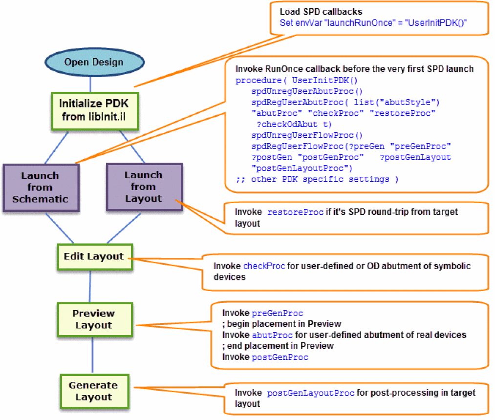

SPD User Flow Callback Functions
Virtuoso Symbolic Placement of Devices (SPD) supports user flow callbacks that help in customizing the design in specific steps of the SPD flow. User flow callback functions help in customizing the design in specific steps of the SPD flow.
The following figure depicts the SPD flow when the user flow callback functions are used.

Related Topics
Return to top